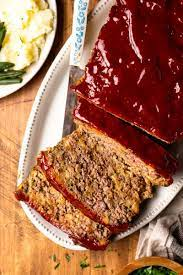

Meatloaf with Stuffing

Description
This wonderfully tasty Stove Top Meatloaf combines ground beef with classic Stove Top Stuffing to make a super easy,
moist meatloaf dinner!
Add a few herbs, an egg, some Worcestershire sauce for flavor, and top it off with ketchup,
tomato sauce, or your favorite BBQ sauce for a family-favorite meal!
Ingredients
- 1 tablespoon olive oil
- 2 lbs ground beef 80/20
- 6 oz Stove Top Stuffing
- ¼ cup milk
- 1 large egg
- 8 tablespoon ketchup
- 1 tablespoon garlic
- 1 teaspoon Worcestershire sauce
- 1 tablespoon Italian seasoning
Instructions
- Preheat the oven to 350°F and lightly grease the interior of your loaf pan.
- In a large mixing bowl add the ground beef, stuffing mix, milk, egg, half of the ketchup, garlic, Worcestershire sauce, and all the seasoning. Reserve 4 tablespoons of the ketchup for the topping.
- Using clean hands or latex gloves, mix all ingredients thoroughly until well incorporated.
- Put the meat mixture into your loaf pan, press it evenly throughout the pan. Go along the edges and push down with your fingers or a spoon to create a well.
- Spread the remaining 4 tablespoon of ketchup (or tomato paste or BBQ sauce) over the top of the meatloaf.
- Bake in the oven at 350°F (175°C) for an hour or continue baking until meatloaf reaches an internal temperature of 160°F (72°C).
- Remove from the oven and allow the meatloaf to rest for 10 minutes before serving.